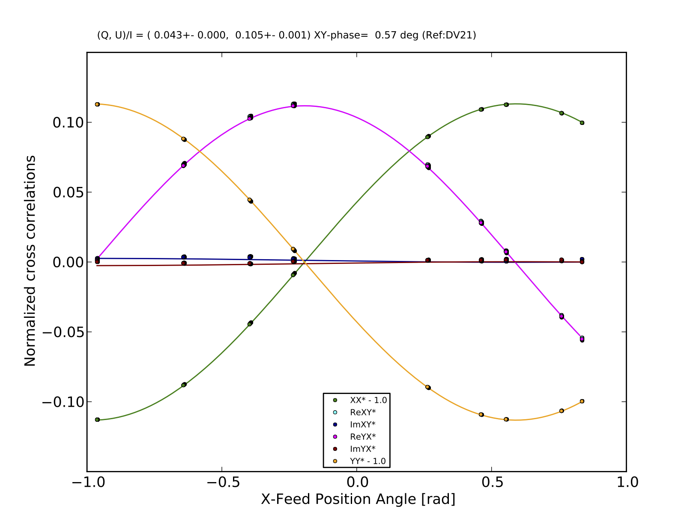

Purpose
When we have D-term tables in a subset of antennas in an array, we want to determine D-terms for the rest of antennas. D-term transfer is a scheme to determine D-term tables of these antennas through a (short) full-polarization scan.
Requirements
- Full-polarization observation for a bright polarized continuum source.
- At least three antennas with well-calibrated D-term tables.
Method
- Gain calibration for all of antennas
- Determine the Stokes parameters and XY phase using a subarray with D-term tables
- Transfer D-term tables for unknown antennas
1. Solve
G for
⟨XjX∗i⟩=GxjG∗xiSxx∗,⟨YjY∗i⟩=GyjG∗yiSyy∗.
2. Determine
S=(I,Q,U,V) of the calibrator
S=D−1P−1X,
where
X=⎛⎝⎜⎜⎜⎜⎜⟨XjX∗i⟩/(GjXGi∗X)⟨XjY∗i⟩/(GjXGi∗Y)⟨YjX∗i⟩/(GjYGi∗X)⟨YjY∗i⟩/(GjYGi∗Y)⎞⎠⎟⎟⎟⎟⎟,D−1=1(1−DjXDjY)(1−Di∗XDi∗Y)⎛⎝⎜⎜⎜⎜⎜1−Di∗Y−DjYDjYDi∗Y−Di∗X1DjYDi∗X−DjY−DjXDjXDi∗Y1−Di∗YDjXDi∗X−DjX−Di∗X1⎞⎠⎟⎟⎟⎟⎟,P−1=12⎛⎝⎜⎜⎜⎜1cos2ψsin2ψ00−sin2ψcos2ψ−i0−sin2ψcos2ψi1−cos2ψ−sin2ψ0⎞⎠⎟⎟⎟⎟.
3. Determine
Dx,Dy of unknown antennas by solving
X=DPS
where
D=⎛⎝⎜⎜⎜⎜⎜1Di∗YDjYDjYDi∗YDi∗X1DjYDi∗XDjYDjXDjXDi∗Y1Di∗YDjXDi∗XDjXDi∗X1⎞⎠⎟⎟⎟⎟⎟,P=⎛⎝⎜⎜⎜⎜1001cos2ψ−sin2ψ−sin2ψ−cos2ψsin2ψcos2ψcos2ψ−sin2ψ0i−i0⎞⎠⎟⎟⎟⎟
Tests
Dataset
Band-3 obserbarion toward 3C 279 on 2015-03-06, 9 DelayCal executions (uid://A002/X9b98ec/X8ad, X949, Xabf, Xaf8, Xb94, Xd0a, Xd43, Xddf, Xf55) with 31 antennas.

uid___A002_X9b98ec_X8ad_WVR-SPW0-DV21QUXY.pdf
- Control group: D-term tables determined by full set (all DelayCal executions, all 31 antennas).
- Test group:
- Use D-term tables of three antennas (DV21, DA44, DA46)
- Use only one DelayCal execution (Xd0a, 30-sec on-source)
- Transfer D-terms for the rest of 28 antennas
- Compare D-term talbles determined by 1. and 2.
Summary
- D-term transfer with short DelayCal scan works if the calibrator is we have enough signal-to-noise ratio in ⟨XY∗⟩ cross polarization visibilities.
- This helps short calibration schemes.
- Application for Grid Survey